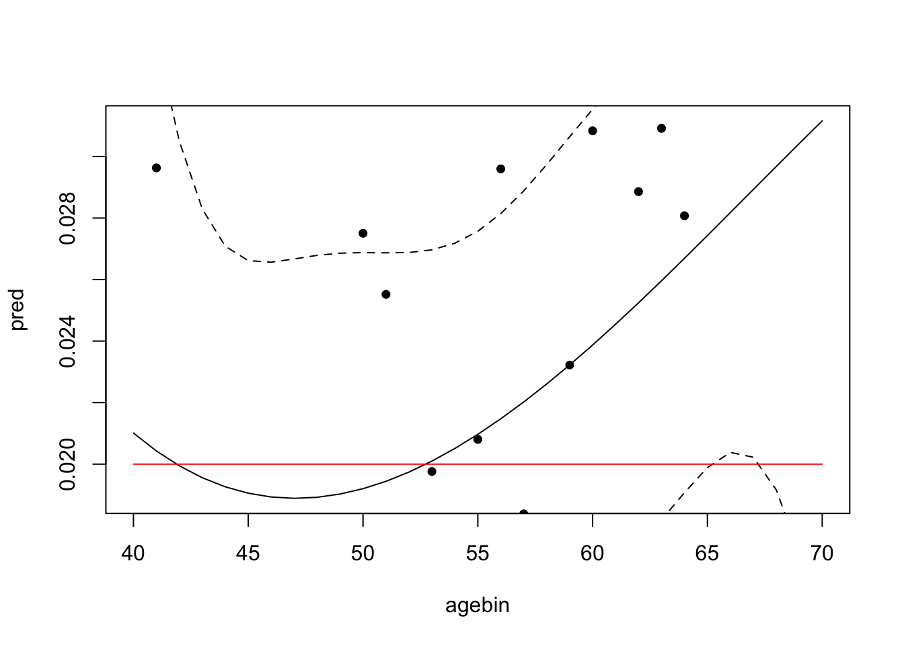
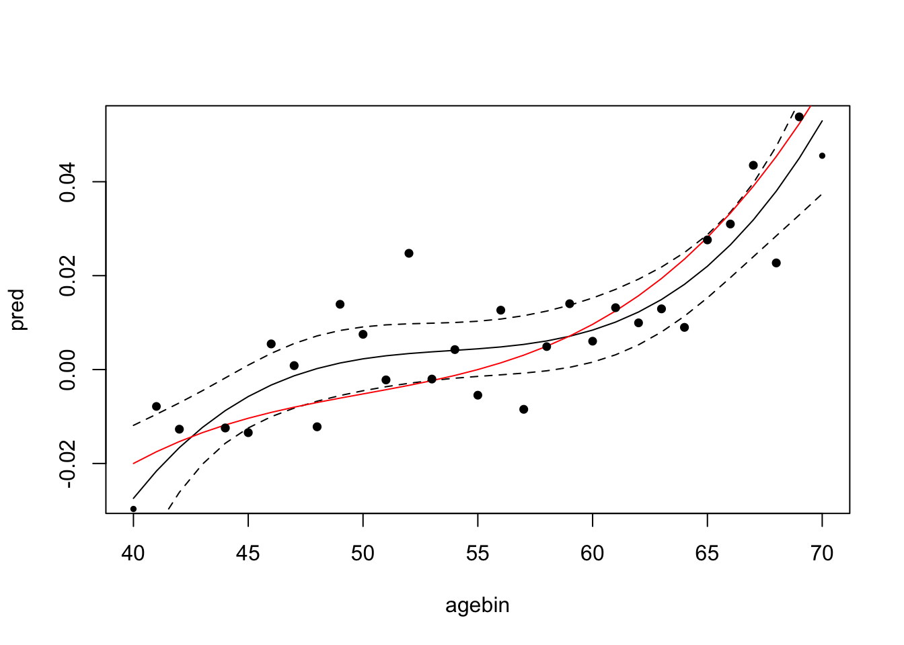
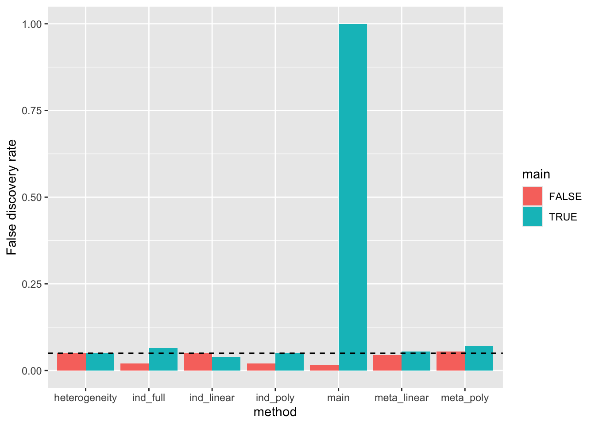
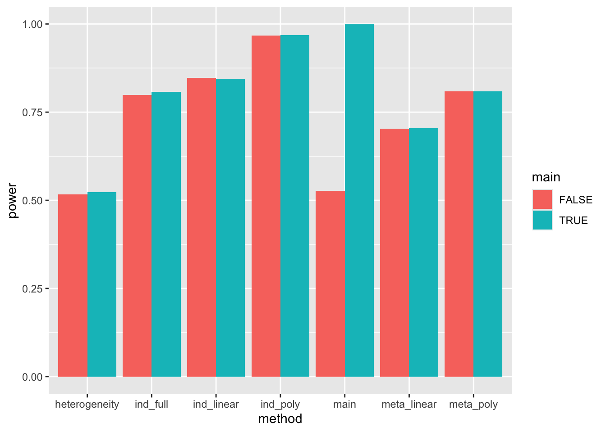

library(dplyr)
library(metafor)
library(ggplot2)
# library(rms)
set.seed(12345)Background
Individual level analysis versus age-stratified GWAS to detect GxAge interactions
Simulation setup
The simulation is based on the following model:
\[ y_i = \alpha + \beta_0 g_i + \beta_1 g_i a_i + \beta_2 g_i a_i^2 + \beta_3 g_i a_i^3 + e_i \]
where \(y_i\) is the phenotype of individual \(i\), \(g_i\) is the genotype, \(a_i\) is the age normalised to have range \((-1,1)\), and \(e_i\) is the error term.
The simulation is based on the following steps:
- Generate a set of coefficients for the age polynomial
- Generate a set of individuals with age, genotype, and error terms
simdat <- function(n=500000, b0, b1, b2, b3) {
nage <- length(40:70)
coef <- tibble(
age = 40:70,
x = seq(-1, 1, length.out=nage),
bxage = x^3 * b3 + x^2 * b2 + x * b1 + b0
)
dat <- tibble(
age = runif(n, 40, 70) %>% round,
g = rbinom(n, 2, 0.5),
e = rnorm(n)
) %>% group_by(age) %>%
do({
a <- subset(coef, age == .$age[1])
mutate(., prs = a$bxage * g, y = prs + e)
})
return(list(dat=dat, coef=coef))
}An example of the simulation with no interaction:
sim <- simdat(500000, 0.02, 0, 0, 0)
sim$dat
# A tibble: 500,000 × 5
# Groups: age [31]
age g e prs y
<dbl> <int> <dbl> <dbl> <dbl>
1 40 2 -0.272 0.04 -0.232
2 40 0 -2.08 0 -2.08
3 40 0 0.490 0 0.490
4 40 0 -0.279 0 -0.279
5 40 1 -0.583 0.02 -0.563
6 40 2 0.583 0.04 0.623
7 40 2 -0.621 0.04 -0.581
8 40 1 -0.0662 0.02 -0.0462
9 40 1 1.87 0.02 1.89
10 40 2 2.66 0.04 2.70
# ℹ 499,990 more rows
$coef
# A tibble: 31 × 3
age x bxage
<int> <dbl> <dbl>
1 40 -1 0.02
2 41 -0.933 0.02
3 42 -0.867 0.02
4 43 -0.8 0.02
5 44 -0.733 0.02
6 45 -0.667 0.02
7 46 -0.6 0.02
8 47 -0.533 0.02
9 48 -0.467 0.02
10 49 -0.4 0.02
# ℹ 21 more rowsEstimation is performed by
- generating summary statistics for 2-year age bins
- estimating the effects of the genotype on the phenotype in each age bin using a simple linear model
- performing a polynomial meta regression of
\[ \beta_{age} \sim age + age^2 + age^3 \]
An example of the model fit is shown below:
sumstats <- function(dat) {
# split dat into 2 year age bins
# dat <- dat %>% mutate(agebin = round(age / 2) * 2)
dat$agebin <- round(dat$age)
ss <- group_by(dat, agebin) %>%
do({
a <- summary(lm(y ~ g, data=.))
tibble(
agebin = .$agebin[1],
beta = a$coefficients[2, 1],
se = a$coefficients[2, 2]
)
})
return(ss)
}
plot_gxage <- function(sim) {
ss <- sumstats(sim$dat)
m2 <- rma.uni(yi=beta, sei=se, mods = ~ poly(agebin, degree=3, raw=TRUE), data=ss)
coefs <- tibble(
method="metareg",
poly=0:3,
b = m2$beta[1:4],
se = m2$se[1:4],
pval = m2$pval[1:4]
)
sav <- predict(m2, newmods=unname(poly(ss$agebin, degree=3, raw=TRUE))) %>% as_tibble() %>% mutate(agebin=ss$agebin)
plot(pred ~ agebin, data=sav, type="l")
lines(ci.lb ~ agebin, data=sav, type="l", lty=2)
lines(ci.ub ~ agebin, data=sav, type="l", lty=2)
lines(bxage ~ age, sim$coef, col="red")
points(beta ~ agebin, data=ss, pch=16, cex=0.01/ss$se)
return(coefs)
}
plot_gxage(sim)
# A tibble: 4 × 5
method poly b se pval
<chr> <int> <dbl> <dbl> <dbl>
1 metareg 0 0.170 0.688 0.805
2 metareg 1 -0.00786 0.0385 0.838
3 metareg 2 0.000129 0.000708 0.855
4 metareg 3 -0.000000644 0.00000429 0.881The red line is the true genotype x age coefficient, and the black line is the estimated effect of the genotype on the phenotype with age. Dotted lines are the confidence intervals.
In this example there is no heterogeneity in the effect of the genotype on the phenotype with age, so the confidence intervals of the polynomial fit are very wide.
Example with interaction:
sim <- simdat(500000, 0, 0.02, 0.02, 0.02)
plot_gxage(sim)
# A tibble: 4 × 5
method poly b se pval
<chr> <int> <dbl> <dbl> <dbl>
1 metareg 0 -1.62 0.621 0.00895
2 metareg 1 0.0901 0.0347 0.00946
3 metareg 2 -0.00167 0.000638 0.00897
4 metareg 3 0.0000103 0.00000386 0.00749Now the confidence intervals are much narrower, and the true effect of the genotype on the phenotype with age is captured by the polynomial fit.
Performance simulations
Evaluate power and type 2 error of different approaches to detect G x age interactions. Approaches using age-stratified summary statistics:
- Cochran’s Q statistic
- Meta-regression with simple linear model
- Meta-regression with polynomial terms
Approaches using individual level data across all ages:
- Main effect of genotype (no interaction)
- Linear G x age interaction
- Polynomial G x age interaction
estimation <- function(dat) {
ss <- sumstats(dat)
m1 <- rma.uni(yi=ss$beta, sei=ss$se, method="FE")
m2 <- rma.uni(yi=beta, sei=se, mods = ~ poly(agebin, degree=3), data=ss, method="FE")
# m6 <- rma(yi=beta, sei=se, mods = ~ rcs(agebin, 4), data=ss)
m7 <- rma(yi=beta, sei=se, mods = ~ agebin, data=ss, method="FE")
# Compare against individual level models
modpval <- function(mod) { pf(mod$fstat[1], mod$fstat[2], mod$fstat[3], lower.tail=FALSE) }
reducedmod <- lm(y ~ g, data=dat)
m5 <- anova(reducedmod, lm(y ~ g * age, data=dat))
m3 <- anova(reducedmod, lm(y ~ g * poly(age, 3), data=dat))
# m8 <- anova(reducedmod, lm(y ~ g * rcs(age, 4), data=dat))
m9 <- anova(reducedmod, lm(y ~ g * as.factor(age), data=dat))
bind_rows(
tibble(method="main", pval=summary(reducedmod)$coefficients[2, 4]),
tibble(method="ind_linear", pval=m5$P[2]),
tibble(method="ind_poly", pval=m3$P[2]),
# tibble(method="ind_rcs", pval=m8$P[2]),
tibble(method="ind_full", pval=m9$P[2]),
tibble(method="heterogeneity", Q=m1$QE, pval=m1$QEp),
tibble(method="meta_linear", Q=m7$QM, pval=m7$QMp),
tibble(method="meta_poly", Q=m2$QM, pval=m2$QMp),
# tibble(method="meta_rcs", Q=m6$QM, pval=m6$QMp),
)
}
# Function to run whole simulation
run_sim <- function(b0=0, b1=0, b2=0, b3=0, n=500000, sim=1) {
args <- as.list(environment()) %>% as_tibble()
sim <- simdat(n, b0, b1, b2, b3)
est <- estimation(sim$dat)
est <- bind_cols(est, as_tibble(args))
return(est)
}
# Example
run_sim(0.02, 0, 0, 0.05)# A tibble: 7 × 9
method pval Q b0 b1 b2 b3 n sim
<chr> <dbl> <dbl> <dbl> <dbl> <dbl> <dbl> <dbl> <dbl>
1 main 2.35e-22 NA 0.02 0 0 0.05 500000 1
2 ind_linear 9.66e-47 NA 0.02 0 0 0.05 500000 1
3 ind_poly 4.80e-52 NA 0.02 0 0 0.05 500000 1
4 ind_full 1.41e-36 NA 0.02 0 0 0.05 500000 1
5 heterogeneity 7.75e-14 127. 0.02 0 0 0.05 500000 1
6 meta_linear 4.26e-19 79.7 0.02 0 0 0.05 500000 1
7 meta_poly 7.25e-19 87.6 0.02 0 0 0.05 500000 1dat <- simdat(500000, 0.02, 0, 0.02, 0.05)$datDo this over a range of scenarios (this was run on HPC in parallel)
library(furrr)
param <- expand.grid(
n = c(300000),
b0 = c(0, -0.02),
b1 = c(0, 0.02),
b2 = c(0, -0.02, 0.02),
b3 = c(0, -0.02, 0.02),
sim=1:200
)
plan(multicore(workers=50))
opt <- furrr_options(seed=TRUE)
res <- future_pmap(param, run_sim, .progress=TRUE, .options=opt) %>% bind_rows()
saveRDS(res, "sim.rds")Results
library(here)here() starts at /Users/gh13047/repo/lab-bookres <- readRDS(here("posts/2024-11-23-age-interaction-power/sim.rds"))First check false discovery rates
res %>% group_by(main = b0 != 0, gxage = (b1 != 0 | b2 != 0 | b3 != 0), method) %>%
summarise(power=mean(pval < 0.05)) %>%
filter(!gxage) %>%
ggplot(aes(x=method, y=power, fill=main)) +
geom_bar(stat="identity", position="dodge") +
geom_hline(yintercept=0.05, linetype="dashed") +
labs(y="False discovery rate")`summarise()` has grouped output by 'main', 'gxage'. You can override using the
`.groups` argument.
Model names:
main= Individual level main effect of genotype with no interaction estimationind_linear= Individual level G x age with linear interactionind_poly= Individual level G x age with polynomial interactionind_full= Individual level G x age with age as a categorical variableheterogeneity= Cochran’s Q statistic for age-stratified summary statisticsmeta_linear= Meta-regression for age-stratified summary statistics using linear interactionmeta_poly= Meta-regression for age-stratified summary statistics using polynomial interaction
Note that all models are wrt
Summary:
- Heterogeneity has well controlled type 1 error when there is a main effect and when there is no main effect
- individual level and meta regression linear models both have well controlled type 1 error when there is no interaction
- individual level and meta regression polynomial models both have inflated type 1 error when there is no interaction (due to overfitting)
Check power
library(ggplot2)
res %>% group_by(main = b0 != 0, gxage = (b1 != 0 | b2 != 0 | b3 != 0), method) %>%
summarise(power=mean(pval < 0.05)) %>%
filter(gxage) %>%
ggplot(aes(x=method, y=power, fill=main)) +
geom_bar(stat="identity", position="dodge")`summarise()` has grouped output by 'main', 'gxage'. You can override using the
`.groups` argument.
Summary:
- Detecting G x age using
heterogeneity(Cochran’s Q) is reasonably powered but has lower power than other approaches - Individual models have higher power than meta-regression models
sessionInfo()R version 4.4.1 (2024-06-14)
Platform: aarch64-apple-darwin20
Running under: macOS Sonoma 14.6.1
Matrix products: default
BLAS: /Library/Frameworks/R.framework/Versions/4.4-arm64/Resources/lib/libRblas.0.dylib
LAPACK: /Library/Frameworks/R.framework/Versions/4.4-arm64/Resources/lib/libRlapack.dylib; LAPACK version 3.12.0
locale:
[1] en_US.UTF-8/en_US.UTF-8/en_US.UTF-8/C/en_US.UTF-8/en_US.UTF-8
time zone: Europe/London
tzcode source: internal
attached base packages:
[1] stats graphics grDevices utils datasets methods base
other attached packages:
[1] here_1.0.1 ggplot2_3.5.1 metafor_4.6-0
[4] numDeriv_2016.8-1.1 metadat_1.2-0 Matrix_1.7-0
[7] dplyr_1.1.4
loaded via a namespace (and not attached):
[1] gtable_0.3.6 jsonlite_1.8.9 compiler_4.4.1 tidyselect_1.2.1
[5] scales_1.3.0 yaml_2.3.10 fastmap_1.2.0 lattice_0.22-6
[9] R6_2.5.1 labeling_0.4.3 generics_0.1.3 knitr_1.48
[13] htmlwidgets_1.6.4 tibble_3.2.1 rprojroot_2.0.4 munsell_0.5.1
[17] pillar_1.9.0 rlang_1.1.4 utf8_1.2.4 mathjaxr_1.6-0
[21] xfun_0.48 cli_3.6.3 withr_3.0.2 magrittr_2.0.3
[25] digest_0.6.37 grid_4.4.1 lifecycle_1.0.4 nlme_3.1-164
[29] vctrs_0.6.5 evaluate_1.0.1 glue_1.8.0 farver_2.1.2
[33] fansi_1.0.6 colorspace_2.1-1 rmarkdown_2.27 tools_4.4.1
[37] pkgconfig_2.0.3 htmltools_0.5.8.1